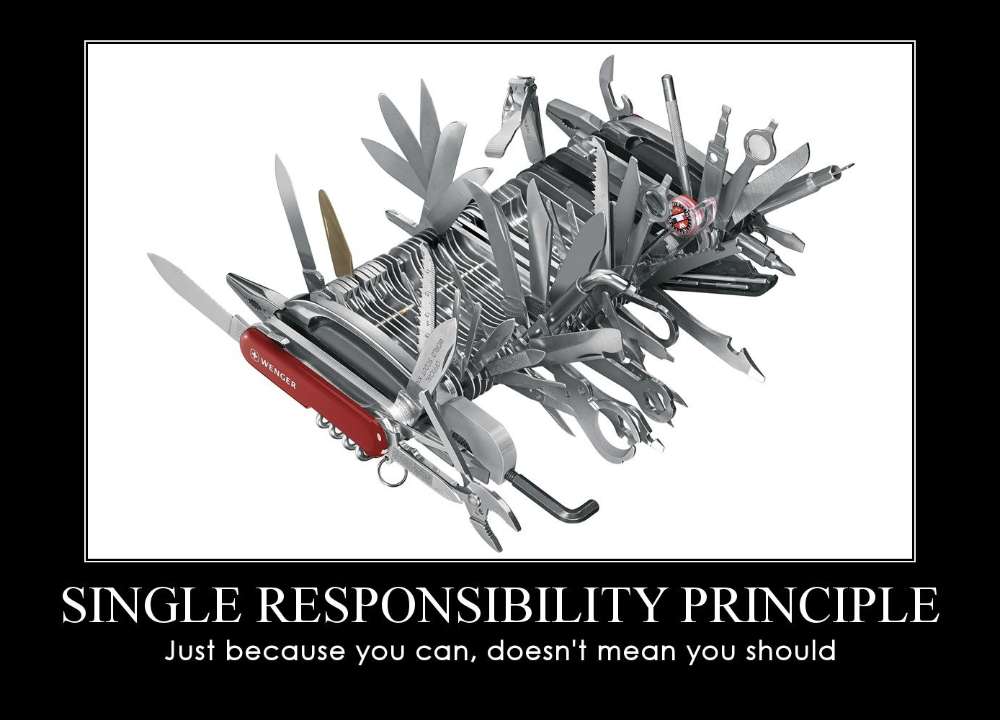
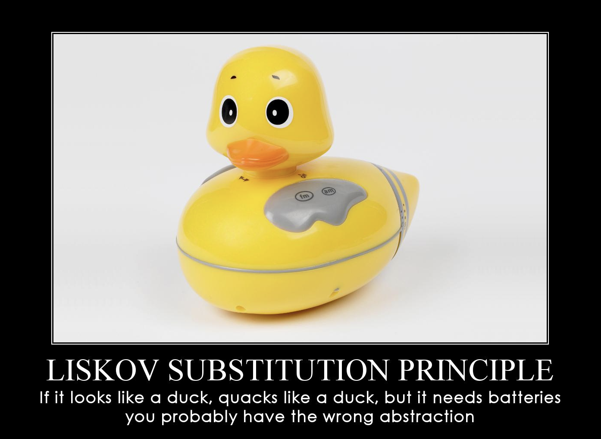
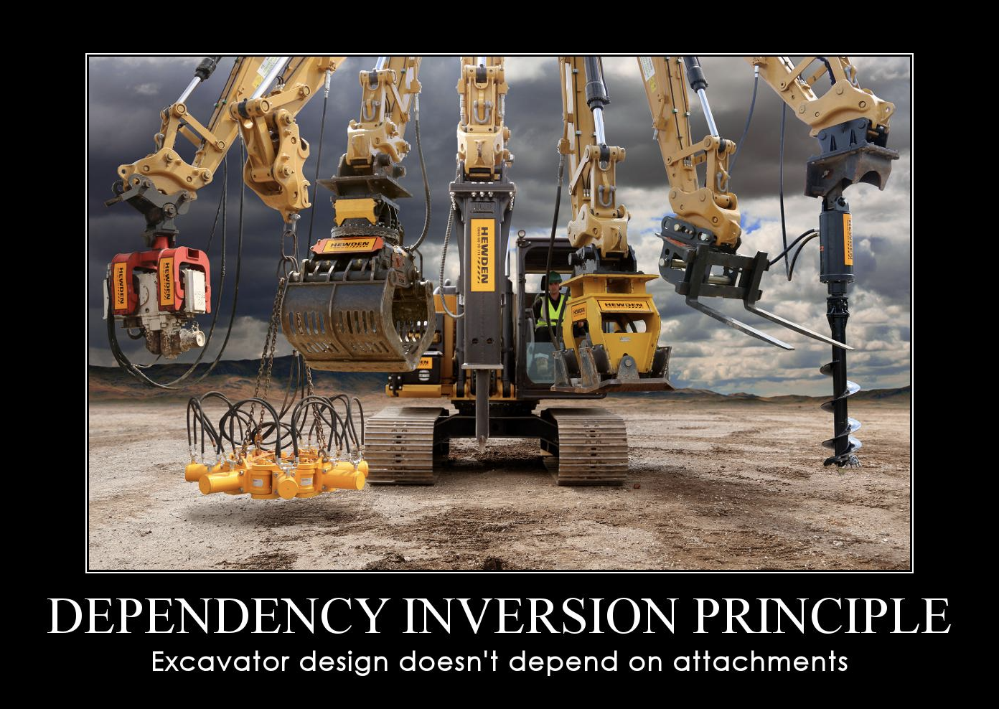

Q&A14
Егор Ерохин
наставникSOLID принципы
- Single responsibility — единственной ответственности
- Open–closed — открытости/закрытости
- Liskov substitution — подстановки Лисков
- Interface segregation — разделения интерфейса
- Dependency inversion — инверсии зависимостей
Single responsibility
"There should never be more than one reason for a class to change."
Open–closed
Программные сущности (классы, модули, функции и т.п.) должны быть открыты для расширения, но закрыты для изменения.Liskov substitution
Базовые типы должны быть заменяемы на подтипы.Методы, которые используют ссылки на базовые классы, должны иметь возможность использовать объекты производных классов, не зная об этом.

Interface segregation
Dependency inversion
Программные сущности не должны зависеть от методов, которые они не используют.
ФП14 ShareIt controllers
- Ветка add-controllers
- User, Item, Booking, ItemRequest
- Пишем контроллеры
- Тесты в Postman
Ваши вопросы
- Single responsibility
- Open–closed
- Liskov substitution
- Interface segregation
- Dependency inversion
- ТЗ14